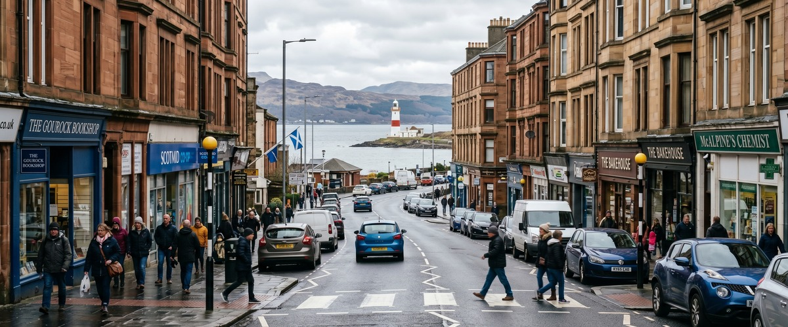
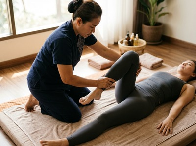
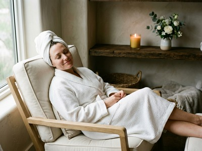

The Cloch Lighthouse area sits on the western edge of Gourock, right where the Firth of Clyde opens up toward Dunoon.

It is a quiet, scenic stretch of coastline along the A770, drawing residents who value the space and views that come with living on Inverclyde's outer edge. Thai massage near Cloch Lighthouse Gourock is closer than many people assume, and Thai Massage Greenock on South Street is the go-to destination for anyone in this part of the firth looking for genuine therapeutic care.
Cloch Point and the surrounding residential pockets attract people who want to be away from the bustle but still connected. Commuters, remote workers, and families all make their home along this stretch of coast.
That kind of lifestyle carries its own physical toll: longer drives, more time at a desk, and the kind of low-level tension that builds quietly over weeks. A regular session at Thai Massage Greenock can address that accumulated strain directly, working through muscle tightness and postural strain before it becomes a persistent problem.

Thai Massage Greenock is located on South Street in Greenock town centre, just a short drive or bus journey from the Cloch area. Jariya Malone, the therapist behind every treatment, trained at Bangkok's Wat Po temple and brings that traditional knowledge to each session.
This is not a chain or spa offering a menu of generic treatments. It is a therapist-led practice where every appointment is built around how you are feeling that day. You can book your session online and choose a time that works with your schedule.
Whether you are dealing with tension from a long commute, recovering from sport, or simply need an hour of proper rest, the following treatments are available:
The Cloch Lighthouse sits on the A770 Cloch Road, roughly two and a half miles south-west of Gourock town centre. By car, the most straightforward route is to follow the A770 north-east into Gourock and then continue along the Clyde coast road into Greenock. South Street is a short distance from the town centre, and the journey typically takes under fifteen minutes in normal traffic.
If you prefer public transport, the 901 McGill's bus service runs between Gourock and Greenock regularly throughout the day. Gourock railway station is also a short distance from the Cloch area, and ScotRail trains connect Gourock to Greenock West in approximately six minutes. From either Greenock station, South Street is within easy walking distance.
Once you have your route sorted, secure your appointment online in advance to make sure your preferred time is available.

Jariya holds certification from the Wat Po Thai Traditional Medical School in Bangkok, widely regarded as the birthplace of traditional Thai massage. Her training goes well beyond technique.
She keeps detailed notes for every client and builds on previous sessions, meaning your treatment develops with you over time rather than starting from scratch at each visit. Clients from across Inverclyde, including Gourock, Port Glasgow, and Kilmacolm, return regularly because the results are consistent and the care is personal.
The Cloch Lighthouse, built in 1797 and designed to warn ships away from the dangerous Gantock Rocks, is one of the most iconic coastal landmarks in Scotland. It stands on Cloch Point overlooking the Firth of Clyde directly opposite Dunoon, and remains a B-listed structure recognised for its maritime and architectural heritage.
Gourock itself has a long history as a seaside town on the upper Firth of Clyde. For more on the town's background, see Gourock on Wikipedia.
The Cloch Lighthouse sits on the A770 Cloch Road, approximately two and a half miles south-west of Gourock town centre and around five to six miles from South Street in Greenock. By car along the A770 and into Greenock, the journey takes roughly ten to fifteen minutes. It is a straightforward coastal drive with no complicated junctions.
The most direct option is to drive the A770 north-east through Gourock and on into Greenock town centre. If you prefer not to drive, the 901 McGill's bus service connects Gourock to Greenock in around fourteen minutes. You can also take the short drive or walk into Gourock town centre and catch a ScotRail train, which reaches Greenock West in approximately six minutes.
Same-day bookings are possible subject to availability. The best approach is to use the online booking form to check what slots are open, or call the studio directly on 01475 600868. Booking ahead is always recommended to secure your preferred time, especially for evening appointments.
Traditional Thai massage is particularly well suited to people who carry tension from long periods of sitting, whether at a desk or behind the wheel. It uses assisted stretching and acupressure to release the hips, lower back, neck, and shoulders — the areas that tighten most from a sedentary routine. Thai oil massage is another strong option if you prefer a treatment with a more restorative, slower pace.
Opening hours are listed on the Thai Massage Greenock booking page, where you can see available appointment times across the week. Sessions are available during the day and in the evening to suit working schedules. If you have a specific time in mind, it is worth booking early to avoid missing your preferred slot.